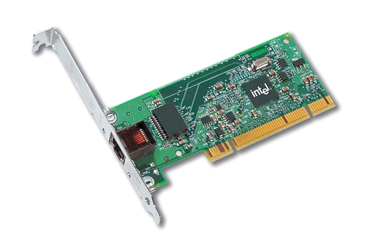
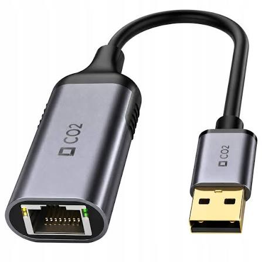

Karta sieciowa umożliwia komunikację komputera z siecią lokalną oraz globalną (Internetem) za pomocą kabli lub fal radiowych. Każda karta posiada unikalny adres fizyczny MAC.
Od jakości karty sieciowej zależy stabilność połączenia, maksymalna prędkość przesyłania danych oraz opóźnienia (ping) podczas korzystania z Internetu i gier online.
Karty sieciowe mogą być wbudowane bezpośrednio w płytę główną lub montowane jako osobne urządzenia.


Łączy komputer z routerem za pomocą kabla sieciowego. Zapewnia stabilne połączenie i jest często wykorzystywana w komputerach stacjonarnych.
Umożliwia połączenie z Internetem bez użycia kabla. Wykorzystuje fale radiowe, a niektóre modele posiadają zewnętrzne anteny poprawiające odbiór sygnału.
Jednym z najważniejszych parametrów jest prędkość przesyłania danych, np. 1 Gb/s lub 2,5 Gb/s. W przypadku Wi-Fi znaczenie mają również standard połączenia, zasięg oraz obsługiwane pasmo częstotliwości.